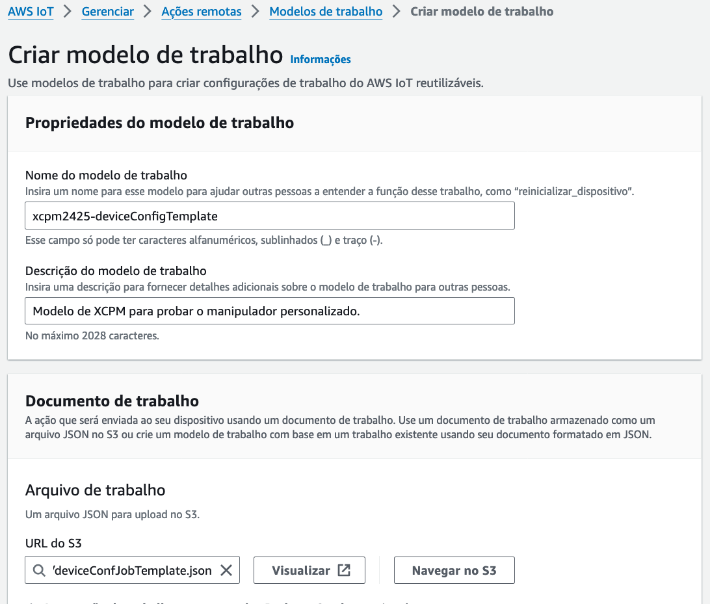
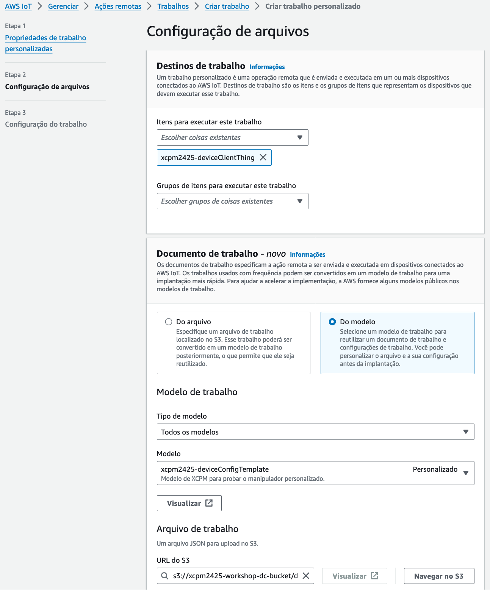
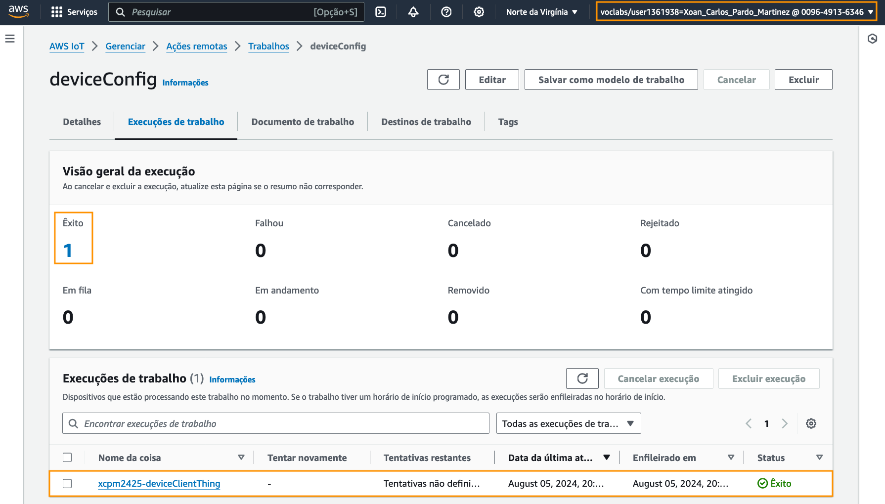
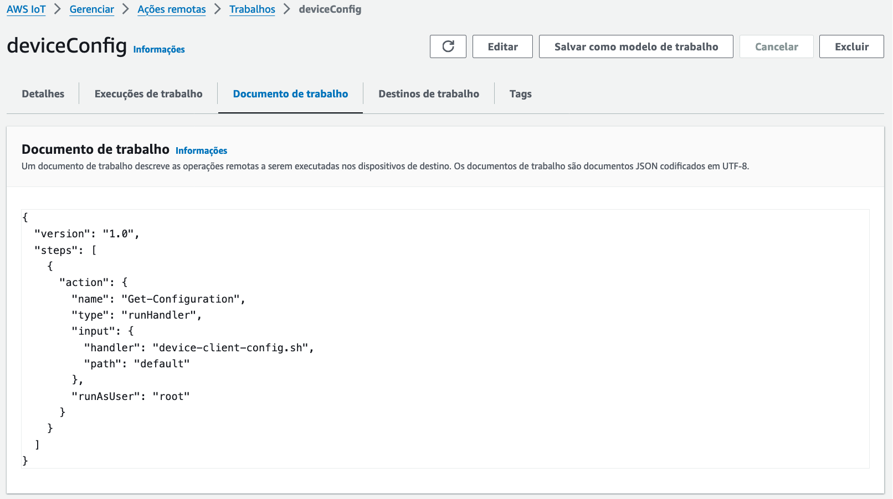
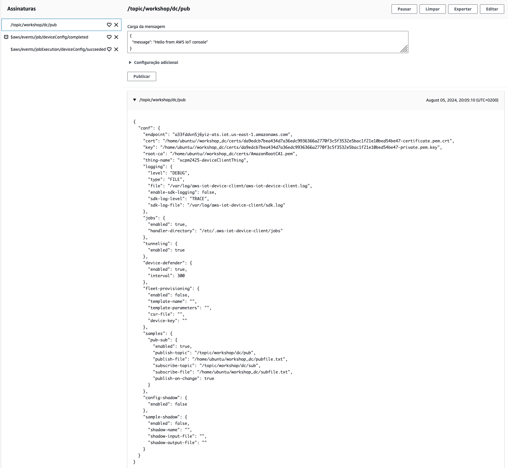
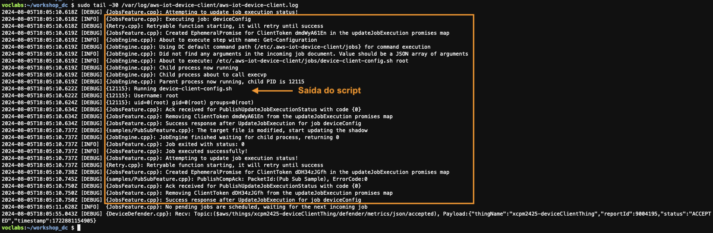

Actividade 3
IMPLEMENTACIÓN DUN MANIPULADOR DE TRABALLOS (JOB HANDLER).
Obxectivo
O obxectivo desta actividade é implementar un manipulador de traballos (Job Handler) no dispositivo IoT.
O manipulador vai consistir nun script que publique a configuración do dispositivo nunha mensaxe MQTT usando a funcionalidade de mensaxería MQTT do Device Client que vimos nunha actividade anterior.
Nota
Podes ver aquí a documentación sobre os manipuladores de traballos do AWS IoT Device Client.
Creación do manipulador de traballos
Para crear o manipulador de traballos fai o seguinte:
- No ambiente Cloud9 no que está instalado o AWS IoT Device Client comproba na configuración dos traballos cal é o directorio no que se almacenan os manipuladores.
$ sudo cat /etc/.aws-iot-device-client/aws-iot-device-client.conf | jq '.jobs'
{
"enabled": true,
"handler-directory": "/etc/.aws-iot-device-client/jobs"
}
- Comproba cales son os manipuladores dispoñíbeis.
$ HANDLER_DIR=$(sudo cat /etc/.aws-iot-device-client/aws-iot-device-client.conf | jq -r '.jobs."handler-directory"')
$ sudo ls $HANDLER_DIR
download-file.sh install-packages.sh remove-packages.sh shutdown.sh stop-services.sh verify-packages-removed.sh
health-check.sh reboot.sh restart-services.sh start-services.sh verify-packages-installed.sh
- Na sección 5.1 do curso, o traballo que descargaba un ficheiro no dispositivo IoT creouse a partires do modelo de documento de traballo AWS-Download-File xestionado por AWS. Este modelo é de tipo runHandler e executa no dispositivo IoT o manipulador download-file.sh pasándolle como parámetros a URL do ficheiro e o directorio no que descargalo.
{
"version": "1.0",
"steps": [
{
"action": {
"name": "Download-File",
"type": "runHandler",
"input": {
"handler": "download-file.sh",
"args": [
"${aws:iot:parameter:downloadUrl}",
"${aws:iot:parameter:filePath}"
],
"path": "${aws:iot:parameter:pathToHandler}"
},
"runAsUser": "${aws:iot:parameter:runAsUser}"
}
}
]
}
Comproba como é a implementación deste manipulador:
$ sudo cat $HANDLER_DIR/download-file.sh
#!/usr/bin/env sh
set -e
echo "Running download-file.sh"
user=$1
fileUrl=$2
outputFile=$3
echo "Username: $user"
echo "File URL: $fileUrl"
echo "Write documents to file: $outputFile"
if command -v "wget" > /dev/null
then
echo "Using wget for downloading user specified file"
if id "$user" 2>/dev/null && command -v "sudo" > /dev/null; then
if [ -d "$outputFile" ]; then
sudo -u "$user" -n wget --quiet -P "$outputFile" "$fileUrl"
else
sudo -u "$user" -n wget --quiet -O "$outputFile" "$fileUrl"
fi
else
echo "username or sudo command not found"
if [ -d "$outputFile" ]; then
wget --quiet -P "$outputFile" "$fileUrl"
else
wget --quiet -O "$outputFile" "$fileUrl"
fi
fi
else
>&2 echo "Wget software package not installed on the device. Use the \"install-packages.sh\" operation to install the wget software package on this device."
exit 1
fi
Como podes ver trátase dun script que recibe 3 dos parámetros de entrada definidos no modelo: a conta de usuario que se vai usar para executar o script, a URL do ficheiro e o directorio no que gardalo, e utiliza o comando wget para descargar o ficheiro no directorio que se lle indica.
Podes curiosear nas implementacións dos outros manipuladores.
Nota
Se o prefires, tamén podes ver aquí a implementación dos manipuladores instalados por defecto.
- No ambiente Cloud9 no que está instalado o AWS IoT Device Client comproba que a mensaxería MQTT está activada e cales son o tópico e ficheiro de publicación.
$ sudo cat /etc/.aws-iot-device-client/aws-iot-device-client.conf | jq '.samples'
{
"pub-sub": {
"enabled": true,
"publish-topic": "/topic/workshop/dc/pub",
"publish-file": "/home/ubuntu/workshop_dc/pubfile.txt",
"subscribe-topic": "/topic/workshop/dc/sub",
"subscribe-file": "/home/ubuntu/workshop_dc/subfile.txt",
"publish-on-change": true
}
}
- Crea un manipulador que publique a configuración do Device Client como mensaxe MQTT.
$ sudo nano $HANDLER_DIR/device-client-config.sh
$ sudo chmod 700 $HANDLER_DIR/device-client-config.sh
$ sudo cat $HANDLER_DIR/device-client-config.sh
#!/usr/bin/env sh
set -e
echo "Running device-client-config.sh"
USER=$1
echo "Username: $USER"
if id "$USER" 2> /dev/null && command -v "sudo" > /dev/null; then
# get publish file from configuration
PUBFILE=$(cat /etc/.aws-iot-device-client/aws-iot-device-client.conf | jq -e -r '.samples."pub-sub"."publish-file"')
STATUS=$?
# check for publish file
if [ $STATUS -eq 0 ] && sudo -u $USER -n test -f "$PUBFILE"; then
sudo -u $USER -n cat /etc/.aws-iot-device-client/aws-iot-device-client.conf | jq '{"conf": .}' > $PUBFILE
else
echo "A valid publish file was not found in the configuration"
exit $STATUS
fi
else
echo "username or sudo command not found"
exit 1
fi
Creación dun modelo de documento de traballo personalizado
Vamos agora a crear un modelo de documento de traballo personalizado para usar co manipulador. Fai o seguinte:
- No ambiente Cloud9 no que está instalado o AWS IoT Device Client crea un ficheiro JSON co modelo de traballo.
$ pwd
/home/ubuntu/workshop_dc
$ nano deviceConfJobTemplate.json
$ cat deviceConfJobTemplate.json
{
"version": "1.0",
"steps": [
{
"action": {
"name": "Get-Configuration",
"type": "runHandler",
"input": {
"handler": "device-client-config.sh",
"path": "default"
},
"runAsUser": "root"
}
}
]
}
- Sube o modelo ao bucket S3 que se usou no curso.
Nomenclatura
Usa o teu prefixo no nome do bucket.
$ aws s3 cp deviceConfJobTemplate.json s3://xcpm2425-workshop-dc-bucket
-
Na consola de AWS IoT escolle a opción Modelos de traballo dentro do menú Accións remotas.
-
Coa aba Modelos personalizados escollida, crea un novo modelo de traballo escollendo Crear modelo de traballo e indicando as opcións seguintes:
- Nome do modelo de traballo: deviceConfigTemplate. Lembra poñer o teu prefixo diante, p.ex. xcpm2425-deviceConfigTemplate.
- Descrición: pon unha descrición para o modelo.
- Documento de traballo: preme no botón Navegar no S3 e escolle o documento JSON que subiches a S3.
 Imaxe: configuración do modelo de documento de traballo.
Creación dun traballo a partir do modelo
-
No cliente MQTT da consola de AWS IoT subscríbete aos tópicos:
/topic/workshop/dc/pub$aws/events/job/deviceConfig/completed$aws/events/jobExecution/deviceConfig/succeeded
-
Abre unha segunda consola AWS IoT para crear o traballo nunha xanela diferente á do cliente MQTT do paso 2. Nesta consola escolle a opción Modelos de traballo dentro do menú Accións remotas e abre as propiedades do modelo deviceConfigTemplate premendo no seu nome.
-
Crea un novo traballo a partires deste modelo premendo en Crear traballo con este modelo e indicando as opcións seguintes:
- Nome do traballo: deviceConfig.
- Descrición: pon unha descrición para o traballo.
- Cousas para executar este traballo: escolle deviceCLientThing.
- Documento de trabalho: non tes que facer nada. Os datos do modelo deviceConfigTemplate xa están cubertos.
- Tipo de execución do traballo: escolle Snapshot.
 Imaxe: configuración do traballo.
Verificación da execución do traballo
- Comproba na consola do AWS IoT que o traballo se executou correctamente.
 Imaxe: execución correcta do traballo na consola IoT.
- Comproba tamén que o documento do traballo é o que definimos no modelo.
 Imaxe: documento do traballo.
- Comproba que se recibiu a configuración do dispositivo no tópico
/topic/workshop/dc/pub. Comproba tamén as mensaxes do traballo recibidas nos outros tópicos do cliente MQTT.
 Imaxe: mensaxe recibida coa configuraciçon do dispositivo.
- E finalmente, comproba que apareza a execución do traballo no log do ambiente Cloud9.
 Imaxe: mensaxe no log do ambiente Cloud9.
Xustificación da actividade
Toma as seguintes capturas para a memoria de xustificación da práctica:
- Ambiente Cloud9 no que se vexa a saída da execución dos comandos seguintes:
$ cat customJobTemplate.json
$ aws s3 ls s3://xcpm2425-workshop-dc-bucket
$ sudo cat $HANDLER_DIR/device-client-config.sh
-
Na consola IoT as propiedades do modelo de documento de traballo deviceConfigTemplate (con que se vexa o apartado de detalles é dabondo, os das configuracións non fan falla).
-
Na consola IoT as propiedades do traballo deviceConfig coa execución finalizada correctamente.
-
Cliente MQTT na consola IoT no que poida verse o contido da configuración recibida no tópico
/topic/workshop/dc/pub.
Importante
As capturas teñen que asemellarse ás que se tomaron no curso e nas prácticas anteriores. As capturas tomadas na consola AWS teñen que incluír o menú superior no que poida verse o nome de usuario da conta.